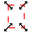
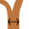

Como usar o programa Arvorizar
Início
Botões
Novo projeto. Apaga os dados do projeto atual e inicia com uma nova tela em branco, contendo apenas o nó inicial "Novo", a ser então renomeado.
Redimensionar. Modifica a largura e altura da imagem, em pixels, reajustando a posição dos itens de forma proporcional.
Salvar o conteúdo inserido num arquivo de texto (csv).
Exportar a árvore como imagem (png).
Abrir arquivos de texto salvos anteriormente.
Selecionar apenas os nomes dos clados. Clique novamente para desmarcar.
Selecionar apenas as imagens. Clique novamente para desmarcar.
Definir a relação entre riqueza de espécies em cada clado e a espessura do ramo correspondente.
 Adicionar nó (clado) descendente do nó selecionado (em vermelho). O novo nó será colocado numa posição aleatória perto do nó selecionado. Digite o nome no campo de edição, depois selecione na janela principal (esquerda) o texto () do novo nó para colocá-lo na posição desejada.
Adicionar nó (clado) descendente do nó selecionado (em vermelho). O novo nó será colocado numa posição aleatória perto do nó selecionado. Digite o nome no campo de edição, depois selecione na janela principal (esquerda) o texto () do novo nó para colocá-lo na posição desejada. Adicionar imagem ao nó selecionado (em vermelho). Mais de uma imagem pode ser adicionada por nó. Para excluir uma imagem, selecione-a () posicionando o curso do mouse sobre ela. Uma borda preta tracejada aparecerá ao redor da imgem. Então aperte Delete e confirme.
Adicionar imagem ao nó selecionado (em vermelho). Mais de uma imagem pode ser adicionada por nó. Para excluir uma imagem, selecione-a () posicionando o curso do mouse sobre ela. Uma borda preta tracejada aparecerá ao redor da imgem. Então aperte Delete e confirme.Inserir o número de espécies (ou gêneros...) em cada clado, o que definirá a espessura do ramo correspondente na figura, segundo a função e os limites definidos ().
Aproximar (zoom in) a imagem na tela, ampliando-a.
Afastar (zoom out) a imagem na tela, reduzindo-a.
Mostrar toda a imagem na tela.
Observações
Aperte a barra de espaço para alternar entre a seleção de texto e a de imagem.
Num cladograma, os nomes dos ramos costumam aparecer ao longo do ramo. Aqui os nomes aparecem, por definição, na extremidade final do ramo. Use a tecla Ctrl enquanto arrasta um nome para reposicioná-lo. Duplo-clique sobre o círculo azul devolve o nome à sua posição original.
Para salvar as imagens entre diferentes sessões, acesse about:config (no Firefox), e modifique o valor da chave "dom.storage.default_quota" para um valor maior que os 5120 padrão (5 MB). 51200 (50 MB) costumam ser suficientes. Para saber o espaço já ocupado, clique aqui.
Duplo-clique sobre os nomes dos clados na lista da direita permite renomeá-los (ENTER para confirmar, ESC para cancelar).